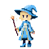
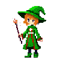
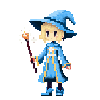
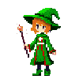

Dawno, dawno temu, na magicznym Skaryszewie, istniała szkoła magii, w której uczyły się czarodziejki. Każda z nich miała swoje umiejętności, a najbardziej utalentowane z nich potrafiły rzucać zaklęcia, które mogły zmienić bieg historii. Jednak nie wszystkie czarodziejki były dobre — niektóre z nich chciały zdobyć władzę i zapanować nad światem. Wtedy inne czarodziejki musiały stanąć do walki, by powstrzymać zło i przywrócić równowagę w krainie magii.
Zostań czarodziejką, rzucaj zaklęcia, twórz i niszcz lodowe bariery, a przede wszystkim — konkuruj z innymi graczami o zwycięstwo! Czarodziejki ze Skaryszewa to dynamiczna gra zręcznościowa, w której musisz wykazać się sprytem i szybkością, by pokonać swoje przeciwniczki. Od pojedynku do czteroosobowej rywalizacji — wybierz tryb, który najbardziej Ci odpowiada i zacznij przygodę z czarodziejstwem już dziś!
Sterowanie
A/← — ruch w lewoD/→ — ruch w prawo
spacja/W/↑ — skok
Myszka — celowanie
Lewy przycisk myszy/Enter — rzut zaklęciem
Prawy przycisk myszy/B — stawianie klocków
Pokrętło myszy — przybliż/oddal (tylko w trybie obserwatora)
Esc — pauza
Tab — pokaż/ukryj podium
Poznaj czarodziejki
 Dicaeopolis
Philippos

Xanthias

Myrrhine
Dicaeopolis
Philippos

Xanthias

Myrrhine